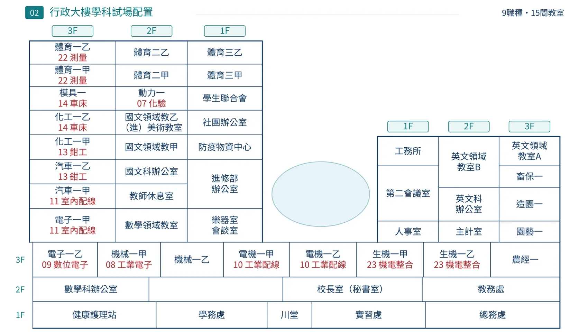

ADMINISTRATION BUILDING / FLOOR PLAN
行政大樓互動教室定位
依 115/11/12 北科附工學科試場配置圖，可切換 1F／2F／3F：2F／3F 共 15 間學科教室；1F 目前沒有列示本次學科考場。教室入口仍須依現場引導。
CLASSROOMS159 職種
1F｜本次未列示學科考試教室
這份來源是學科教室配置索引，1F 不提供專用樓層平面圖；請切換 2F 或 3F 查看有配置的教室。行政動線仍依現場指引。
☞ 手機可左右滑動查看完整教室圖；選取職種後會自動將教室移到可見範圍。

本樓層教室 選取職種點選色框選定職種，再按下方「查看本職種日程」
這是原圖教室格位的對照，不是實測門口、樓梯或入場動線。正式前往請依現場標示及工作人員指引。
第六輪完整樓層與定位
目前圖面依原始資料標示 15 間教室。若需職種的考前提醒及館舍互動定位，可開啟第六輪版。